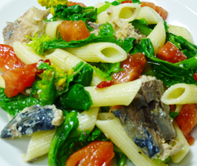

サバ缶と菜花のペンネ
- 調理時間：30 分
- （一人当たり）
- カロリー：734kcal
- たんぱく質：34.1g
- 脂質：27.3g
- 炭水化物：77.6g
- 塩分：1.4g


＜2人分＞
- ペンネ（乾）
- 200g
- サバ缶（水煮）
- 1缶
(約190g) - 菜花
- 100g
- トマト
- 小1個
- オリーブオイル
- 大さじ1～2
- 鷹の爪（輪切り）
- お好みで
- 塩、コショウ
- 各少々


- 菜花は熱湯でサッと茹で、水気をしぼって長さ５㎝に切る。
トマトはクシ切りにする。 - ペンネをたっぷりの湯で指定の時間通りに茹でる。
茹で上がったらザルにとって湯をきる。
このとき、茹で汁も使うので50～100mlほどとっておく。 - フライパンにオリーブオイル、鷹の爪をいれて弱火にかけ、香りがでてきたらサバ缶を汁ごといれ、
ペンネの茹で汁を加え、煮立たせて乳化させる。
トマトも加えて、火を通す。 - ③に茹でたペンネと菜花を加え、炒め合わせ、塩とコショウで味をととのえる。
サバ缶と菜花のペンネ
サバ缶が注目されており、インターネット上やメディアでも話題になっています。安価で便利ということに加えて、生よりも栄養価が高いということをご存知ですか。
サバ缶は、骨、皮、血合いまで入っていて無駄なく栄養素をとれるという利点があります。また、製造方法は密封してから加熱するため、空気に触れず、劣化が抑えられます。
主な栄養素は、カルシウム、ビタミンD、DHA、EPA。骨によく、脳によく、オメガ３系脂肪酸がしっかりとれるのも魅力です。